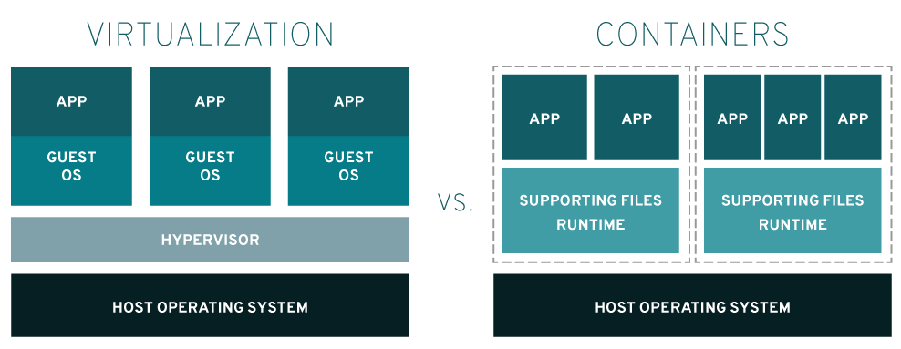

Linux (for data Scientists)
HOGENT toegepaste
informatica
Thomas Parmentier, Andy Van Maele, Bert Van Vreckem
2024-2025

https://www.redhat.com/en/topics/containers/containers-vs-vms
OS-level virtualization
Solomon Hykes @ PyCon 2013
dockerlab/ binnen
je repository.install-docker.sh uit als root.man docker-run
man docker-exec
man docker-<TAB><TAB>docker image ls
docker pulldocker run -d
docker run -i -t
docker exec -i -t
docker ps
docker container lsdocker volume ls
docker volume create VOLUME_NAME
docker volume inspect VOLUME_NAME
docker volume rm VOLUME_NAME
docker volume pruneVoorbeeld Dockerfile:
FROM alpine:latest
LABEL description="This example Dockerfile installs NGINX."
RUN apk add --update nginx && \
rm -rf /var/cache/apk/* && \
mkdir -p /tmp/nginx/
COPY files/nginx.conf /etc/nginx/nginx.conf
COPY files/default.conf /etc/nginx/conf.d/default.conf
ADD files/site-contents.tar.bz2 /usr/share/nginx/
EXPOSE 80/tcp
ENTRYPOINT ["nginx"]
CMD ["-g", "daemon off;"]docker image build --tag local:static-site .
docker image ls
docker run -d -p 8080:80 --name websrv local:static-sitedocker image inspect
docker image inspect alpine:latest | jq ".[]|.RootFS.Layers"
docker image historyedit docker-compose.yml
docker-compose up -dVoorbeeld:
dockerlab/labs/todo-app/docker-compose.yml